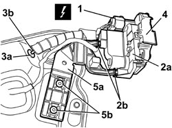

7010N20 REAR SIDE DOOR LOCK MOTOR/CATCH ASSEMBLY - R.R. WITH DOOR PANEL AND SUPPORT FRAME REMOVED
- Path
- Procedures > 70 FITTINGS > 7010 PASSENGER COMPARTMENT REAR SIDE DOORS > 7010N REAR SIDE DOOR CENTRAL LOCKING SYSTEM > 7010N20 REAR SIDE DOOR LOCK MOTOR/CATCH ASSEMBLY - R.R. WITH DOOR PANEL AND SUPPORT FRAME REMOVED
- Kind
- repair procedure (removal / refitting; the operation number is the code)
- Applies to
- all engines; all production periods
- Interactive page
- https://sloeber94.github.io/elrnDB/#/939011192
Applies to: all engines; all production periods
 Removing
Removing
 Refitting
Refitting1. Disconnect the electrical connection.
Description | Component |
|---|---|
LEFT REAR DOOR LOCK GEARED MOTOR | |
RIGHT REAR DOOR LOCK GEARED MOTOR |
2. Disconnect the lock (2a) from the support retainers (2b).
3. Release the rod (3b) seal (3a) from the frame.
4. Keep the lock complete with rod.
5. If necessary, keep the lock support (5a) after having removed the rivets (5b) using a drill.

Applies to: all engines; all production periods
Refitting
Removing- Check that the lock is not damaged.
- If removed, place the lock support in position and secure it using the rivets.
- Attach the lock to the support retainers.
- Fit the rod seal on the frame.
- Connect the electrical connection.